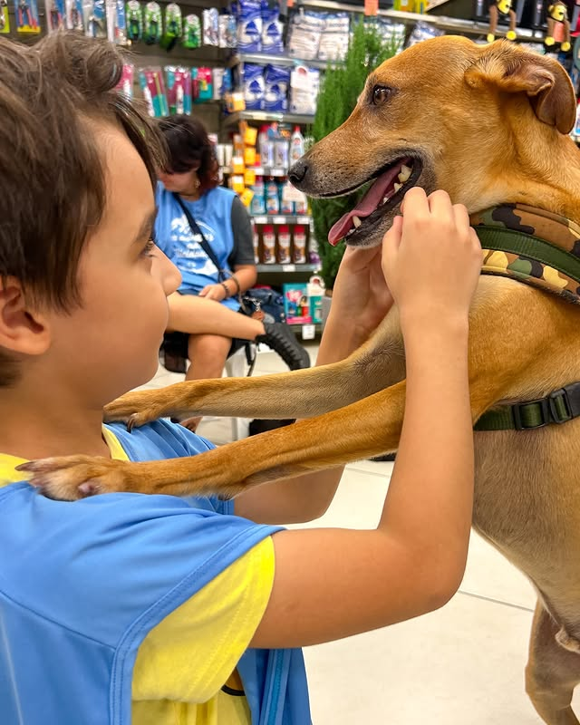
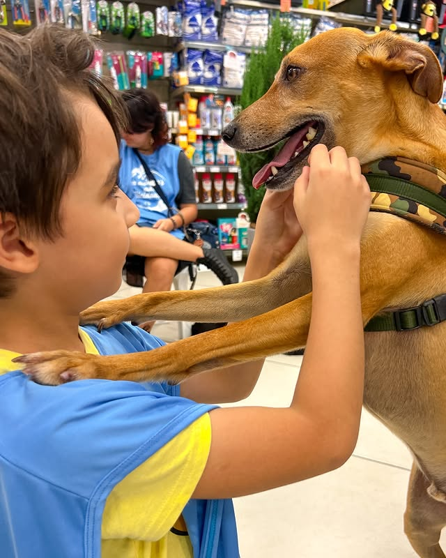

E mais vidas estão sendo salvas!

 

Cuidado profissional, amor incondicional: Sua atitude salva vidas
A AAAPG é uma associação de Praia Grande que resgata animais abandonados ou vítimas de maus-tratos.
Ela cuida, trata, castra e busca adoções responsáveis para garantir que esses animais tenham uma nova chance e uma vida com dignidade.

Bem-estar e segurança

Recomeços dignos

Luta pela
adoção responsável
Serviços de alta qualidade para o seu pet, garantindo que mais animais de rua tenham a chance de um futuro

Conheça Nossos Pets em Busca de um Lar


A AAAPG, de Praia Grande, dedica-se a resgatar animais abandonados ou maltratados,
oferecendo atendimento veterinário, tratamento e castração.
Depois de recuperados, eles são encaminhados para adoções responsáveis,
garantindo que cada bichinho encontre um lar seguro, amoroso e cheio de cuidado.
É um trabalho essencial para dar a esses animais a chance de recomeçar com dignidade.